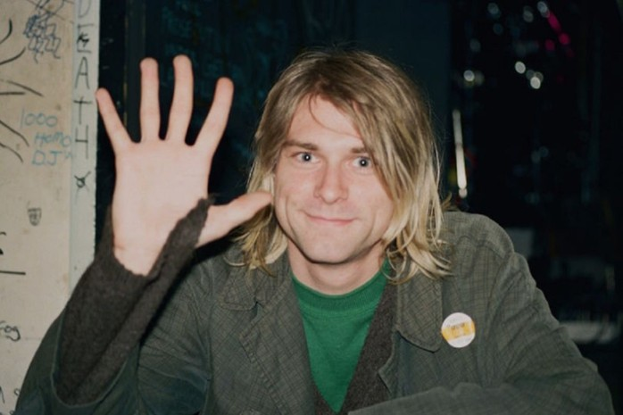
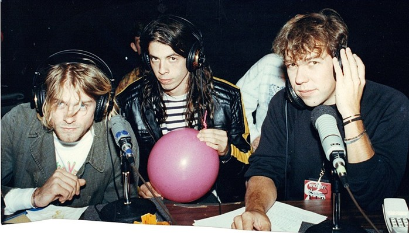

A tres décadas de la partida de Kurt Cobain, su legado sigue resonando con fuerza en la cultura musical y social. El emblemático líder de Nirvana no solo definió el sonido del grunge, sino que también se convirtió en la voz de una generación marcada por el descontento y la búsqueda de autenticidad.
Su música, junto a la composición de sus letras y actuaciones llenas de energía, atrapó a toda una generación que se envolvió en una bandera necesitada de levantar la voz, cualquiera que fuera su causa.

A pesar de su temprana muerte a los 27 años, Cobain dejó una huella indeleble influenciando a innumerables artistas. Su enfoque sin filtros hacia la vida y la música sigue inspirando a las nuevas generaciones a expresarse con honestidad y sin miedo.
La conmemoración de los 30 años de su partida nos recuerda no solo su talento excepcional, sino también la vulnerabilidad humana que yace en el corazón del arte. Cobain será siempre recordado como un ícono cultural que desafió las convenciones.

¿Y QUÉ HA PASADO CON NIRVANA?
Krist Novoselic se ha mantenido activo en la música y la política, mientras que Dave Grohl alcanzó la fama global con Foo Fighters. Los lanzamientos póstumos, como el “MTV Unplugged in New York”, han consolidado a Nirvana con más de 75 millones de discos vendidos en todo el mundo.